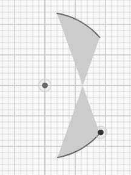
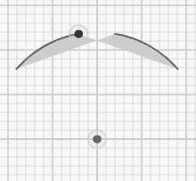
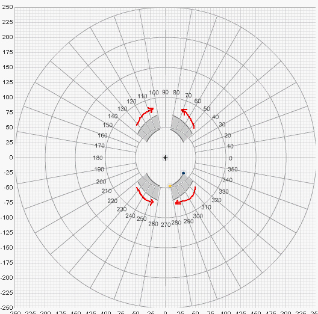

How to reflect arcs in Graffiti Grapher:

Lets start with the two lines of the single default shape you get when you first open the applet. We turn shape 1 border 2 into an arc, and set "after each degree swept" to 0 to avoid confusion about changing the radius. Now we have the default values radius 60, starting angle 40, ending angle 80. Now click on shape 1 border 1. Note that you again have to make the radius 60 and "after each degree swept" to 0. Now if you make both angles negative (sa= -40, ea = -80) then you have reflected across the X axis.
Reflection across the Y axis is a little more tricky. First, take away the negative signs so we are back to the default values. Now, I think about it this way: the Y axis is at 90 degrees. So you want to do the same thing on both sides of the 90 degree angle. The starting angle sa=40 will "undershoot" 90 by fifty degrees. So on the other side of the Y axis, you want ea to "overshoot" 90 by fifty degrees. Thus ea = (50 + 90) = 140 . Same with ending angle ea=80: it will "undershoot" 90 by ten degrees on the right side, so you want sa to "overshoot" 90 by 10 degrees on the left side: 10+90 = 100. Thus ea = 140, sa = 100.
Now lets look at all four quadrants.
The sa=40 of the first arc is similar to sa=140 of the second arc because when we reflect the grid around the y axis, the 0 is like the 180. But after reflection you can see that red arrow which was going counterclockwise before is going clockwise now.
As a result as we go up in numbers from 0 to 40 for the original arc, it's like going down in numbers from the 180 to 140 in the reflected arc. Since the sa of 40 was saying that we started the arc 40 degrees away from the 0, we take 40 degrees away from the 180 and get 140. Similarly the 80 becomes 100 because 180-80=100.
This way we are reflecting both the angles and the direction of the arcs which are drawn as red arrows, from the start of the arc to the end of the arc.
Now let's say we want to reflect across the x axis instead of the y axis. We start by going counterclockwise in a positive direction. After reflecting we will be going clockwise, in a negative direction again. So the 0 is like 360. The 40 is like 360-40=320, and the 80 is like 360-80=280.
And finally to reflect across both the x and the y axis we can take our first reflection across the y axis and reflect it now across the x axis, now we are going counterclockwise again from 180 to 270, thus the angles are
220 and 260.